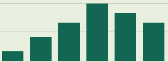

Morning observations
Lavender drew the first bees just after sunrise.
- Lavender beds in full bloom
- New buds on the climbing roses
- One swallowtail near the gate

7 amNoon
North garden · 12 September
Lavender drew the first bees just after sunrise.
